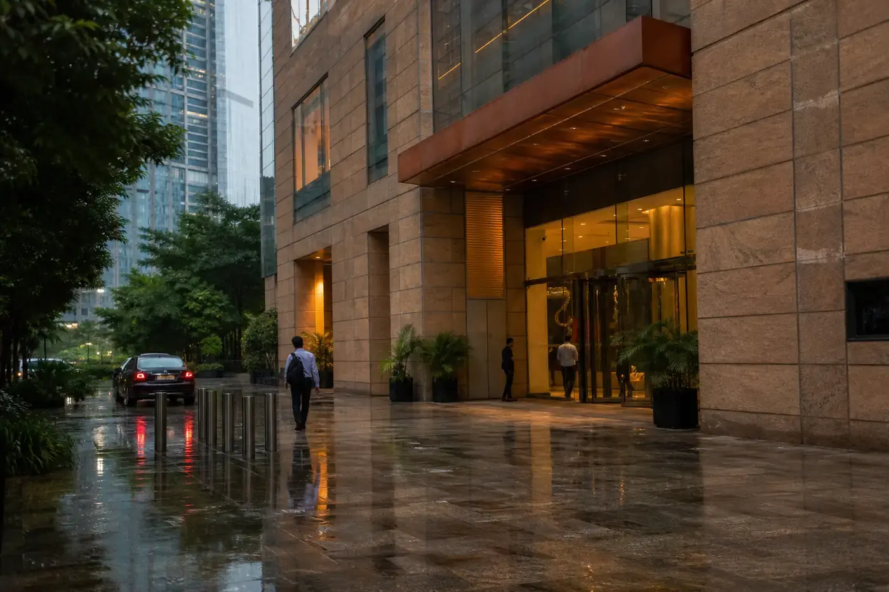

01
Daylight
Claims on a ledger
Stage names — intimated, pre-auth, queried, approved — sit where a member can read them. A file is not a mood.
Canopy House · BKC · monsoon dusk
Stackly Canopy Health Insurance Co. Ltd. is a fictional IRDAI-registered insurer (Regn. No. 142) for this theme. The building is 14 Canopy House. The product is a household canopy — named waits, a rain desk till 20:00 IST, cashless only on a printed root list. Never a hospital operating system.
Mumbai, 2019
A Kin-shaped family in Dadar filed a reimbursement in February 2018 with another company. The file bounced for a missing discharge stamp, then for a PED query that had already been answered, then for a TPA that had changed mid-claim. Settlement arrived in January 2019. We incorporated that March so a household would not wait a monsoon and a winter for rain that was already owed.

Licence to elder
Five dated marks from the first Solo ring to printed Elder waits. Each year is a product, a count, or a clause we still stand under — not a brand film.
Solo first
Registration 142. First sealed policies were Solo rings in Mumbai and Pune. Rain desk opened on the second floor with four people and a pigeonhole for city files.
4 clerks · 2 cities · no Kin yet
Household floater
2–6 members. 100% restoration written in the heading, not the appendix. Maternity stayed optional — we would not pretend a 24-month wait was “included.”
Restoration on the face · Bloom optional
City lists
Network crossed eight thousand hospitals. We published city lists. Cashless was a named door, not a slogan that every ward in India was ours.
Published atlas · not “everywhere”
Super top-up
For households whose base SI was exhausted by a single ICU. Deductible named — ₹5L or ₹10L. We refused to sell Crest as a cheap base canopy.
Follows the base waits
Entry 61–80
Two-year PED wait printed on the e-card. Journal essays on room-rent and GST. Settlement ratio for FY 2024–25: 96.4%.
Wait on the card · co-pay stated
Grove principles
If a wait exists, it has a number. If a room is capped, the rupee figure is on the certificate. The desk picks up until 20:00 IST.
01
Daylight
Stage names — intimated, pre-auth, queried, approved — sit where a member can read them. A file is not a mood.
02
30 / 24 / 2
Initial days, maternity months, PED years. If a wait exists, it has a number on the specimen and the e-card.
03
₹ on the face
If a band caps the room, the rupee figure is on the certificate. We will not let a 1% clause ambush a family at discharge.
04
08:00–20:00
Mon–Sat IST. After 20:00, WhatsApp queues for the next rain. We do not hide behind a bot that cannot issue a query.
What we refuse
Four pitches you will not find on a Canopy specimen. If an advisor says otherwise, write the desk.
01
We will not hide pre-existing disease behind “lifestyle questions” so a claim can be declined two years later.
02
A network list still decides the door. Cashless is 14,800 named hospitals — not a slogan that every ward is ours.
03
Bloom and Pulse are not Kin. We will not sell an OPD wallet or a maternity rider as if it were a household canopy.
04
We do not advertise worldwide instant rain. Median network pre-auth is 47 minutes. Overnight files wait for the desk.
The desk
Mumbai
Chief Underwriter. She would rather decline a silent PED than seal a canopy that cannot rain.

BKC · 2nd floor
Claims Head. Holds the rain desk to 47-minute pre-auth on network, and says when a file is queried.

Grievance TAT 14 days
Grievance Officer. Reads the letter before the ledger. Ombudsman path is explained, not threatened.

412 cities
Network Lead. Adds a root only when the TPA desk at that hospital will pick up after 2pm.
Pricing
Actuary. GST is 18%. She will not price a 1Cr ring as if dengue never visits Pune.

Member parlour
Member Voice. Translates discharge English into the sentence a household can stand under.
Canopy House tour
Seal room Rain desk
Rain desk Root library
Root library Member parlour
Member parlourPublished rain
FY 2024–25 settlement and the network as of this theme. Pins are cities. Cashless is a list — not a promise on every street.
Network hospitals
412 cities on the root listCSR FY 2024–25
Settlement ratio, not a sloganAvg cashless pre-auth
Network median, desk hoursLive canopies
Households under a sealed ringRegulators & fairness
Educational copy for this theme — not legal advice. IRDAI 142 is the fictional registration. If the rain desk cannot close a grievance in 14 days, Ananya Rao takes the letter. The Insurance Ombudsman remains after our desk. We will not tell you to skip it.
The seal
A licence to seal household canopies — not to run a hospital. Portability, free-look, grace, and product disclosure sit on the specimen. Circulars we act on are dated in the Journal.
14-day TAT
Grievance officer, second floor. She dates the letter before the ledger. She explains the ombudsman form. She does not draft it for you, and she does not hide the address in a PDF nobody opens.
grievance@stacklycanopy.com · after the rain desk, not instead
How a complaint travels
Day 0
Policy number, city, and what is unpaid. Not a photo of a ward. After 20:00 IST the queue holds until 08:00.
Same evening
Written if the pack is in before 16:00 IST. Stages stay on the ledger: intimated, queried, approved.
14 days
Ananya dates the file. If the rain desk already answered, she still reads it. Closure is a stamp, not a chat.
After our desk
The city on the policy. We print the path. Hiding theirs is not a policy we run.
Canopy House · 400051
14 Canopy House, Bandra Kurla Complex. Paper pass at reception — government ID. Rain desk, second floor. Quotes in one business day.
